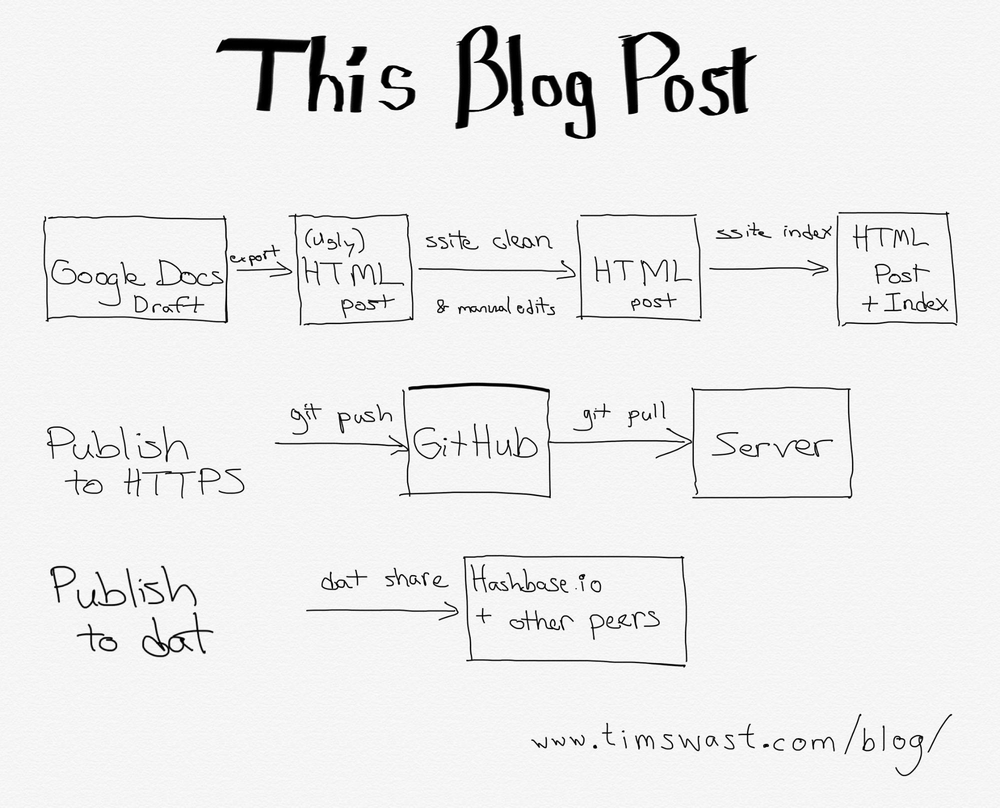

Five years ago, I
announced that I had made the ssite
static site enhancement tool public. In this post, I’ll reflect on
my experience of using ssite to maintain this website for the past half
decade.

Posting a new article
The main purpose of this website is to serve as my personal blog, so the
thing I do most often (but still not as often as I’d like), is post new
articles to the site.
With ssite, the process of posting a new article is straightforward. For
the full experience it requires the use of a couple Python scripts, but
overall it should be natural to anyone that has ever drafted an HTML
document.
-
Write a draft. In the case of this article I'm writing in a Google Doc, but I
drafted most posts as hand-written HTML.
-
Create a plain HTML version using a simple
HTML template and place the file at
blog/YEAR/MONTH/DAY/TITLE/index.html for publishing.
-
Run
ssite index to update the blog post index page.
-
Publish the changes to the
GitHub repository, the
HTTPS version, and the Dat version (The Dat version is a recent
addition, managed by the Dat
CLI, pinned by Hashbase, and
viewable in Beaker Browser).
Overall, this process is smooth, but it is more cumbersome than I’d like.
I haven't encountered any problems with hosting, but I do have some ideas
about how to improve the process.
Static sites keep serving simple
Instead of this manual process, I could use a blog engine like WordPress.
Indeed, the whole flow would be easier if I could edit and publish blog posts
entirely online. While I do want the process to be easy, I also want to
minimize the time I spend maintaining the site. If I were to run this site on
a blog engine, I would have to keep servers running, apply security patches,
and keep the code updated to the latest versions.
With static HTML, any web server is capable of hosting my website. Because
the site is just a collection of static files, I don’t need to do much of
anything to keep it running. It’s a freeing feeling.
Keeping the server simple also makes the site easier to scale if any post
gets popular. It’s much easier to scale up the number of instances of a
static content server than it is to scale up a bunch of servers that
dynamically generate pages.
For the same reasons that a static site is easy to scale, it is easy to
archive. To host a backup copy, all someone needs is a copy of the content.
They could download the files from my server or the whole site history from
the source code on GitHub. With the Dat
protocol, it is even easier to archive; anyone can keep the site alive by
pinning it in Beaker Browser.
On the authoring side, one reason I like static HTML is that it’s quite
easy to add JavaScript in rare
posts with client-side dynamic content. With other tools, I would have
to much more careful to ensure the JavaScript I write does not conflict with
the generated code. I might even have to write a blog engine plugin to insert
the script tag at all.
Enhance; don’t generate
A downside of static HTML is that it results in repeated code. For
example, a navigation section must be repeated on all pages in the site. This
is at odds with one of the cardinal rules of programming:
don’t repeat yourself
.
One way to address this is to use templates and run a generator such as Jekyll or Hugo to create a rendered version of all pages.
Previously, I generated this site using Hyde, but I disliked a few things about
this process.
-
When editing, I had to run a build step every time that I want to see what the
rendered version would look like.
-
I felt an obligation to keep the generator tools up-to-date, which sometimes
mean that I have to make additional edits to the templates.
-
I wanted it to be very clear to anyone how to build my site and host it for
archival purposes or if someone wanted to contribute content such as
translations. With any static site generator, a contributor would have to learn
the templating language and how to run the generator. Plain HTML is much easier
to learn than how to run a generator.
I’ve started following a new principle: enhance, don’t generate. Use tools
to make the static HTML files better and only generate the bare minimum that
needs to be generated. In my case, the blog post index page is generated by
ssite index, but in all other pages the source is the rendered version. Even
with a generated blog index, I check the rendered version into version
control. The whole site is complete from source without any external
generator tools.
Without a generator, one way I’ve tried to avoid repeating code is that I
don’t have a fancy navigation bar anymore. It was the first thing to go when
I stopped generating the article pages. I have no regrets about dropping it;
what people care about when they land on a blog post is the actual content.
I’ve stripped away navigation links, header, and sidebars. That leaves just
the content and a little footer note about attribution.
Has this met my goals?
Overall, I’m pleased with the experience of using static HTML for my website. I
do have some pain points, but I want to address those without sacrificing the
simplicity of having the source files be the same as the rendered version.
Easy of use for editing
I’ve become less satisfied drafting articles in hand-written HTML than
when I started. At home, I use a phone and tablet more often than I do a
laptop. I want to be able to continue editing a draft on any of my devices,
whether I’m using a laptop, desktop, iPad, or phone. I’ve tried a handful of
mobile HTML editors, but none as easy to use or synchronize across devices as
Google Docs.
When I draft blog posts in hand-written HTML, I also find it awkward to to
use a date-based path (YYYY/MM/DD/title/index.html) for the
draft file. I don’t know exactly when I’ll finish something, so it’s awkward
to pick a date in advance. I always have to edit the date again when I’m
finally ready to publish the post, usually way past the date I first
estimated.
I’m adding to ssite scripts to make this a little better. For example, I
like to draft articles in Google Docs. Google Docs can export as HTML, but
the HTML is a bit messy and isn’t compatible with the CSS of this site, so
I’ve created a ssite clean script to remove messy markup that
gets in the way of my site’s style.
Besides writing blog posts, I also draw pixel art illustrations and
animations, but it’s rare for me to post my art here. I created collections
of all the pixel art I drew for
Octobit 2016
and
Octobit 2017
,
but I posted those images here well was after I had posted them elsewhere.
One reason I don’t post
individual artworks
often is that a blog post feels too heavy-weight for just an image with a
caption. I’d like to explore ways to post art via
IndieWeb “notes”
while maintaining the enhancement principle in ssite.
Ease of use for publishing
It’s so much easier to post to elsewhere compared to writing static HTML
and pushing it to a server. Even though that process is simple, it’s a few
steps and it pretty much requires my laptop. Also, posting here can sometimes
feel like duplicate work because when I do post here, I still feel that I
have to post to social media, since that’s where my friends will actually see
it.
An approach I’d like to explore is the IndieWeb POSSE model.
The idea is that it should be easy to make a post on my site and syndicate it
to social media. When I post a pixel art image here, it should also appear on
Instagram,
Twitter,
Facebook,
Tumblr,
Mastodon,
Giphy, and
Google+.
Some automation would help because it’s a lot of work to make posts by hand,
especially when pixel art is involved, because each site
renders
pixel art best when you upload to very specific file formats and sizes.
Maintenance burden
I did make some software upgrades in the past 5 years. I modified ssite to
run on Python 3, and I replaced MathJax with KaTeX. Since I initiated these
updates rather having been forced into them, they did not feel like a burden.
Overall, I’ve spent very little time (only a handful of hours) keeping my
website maintained compared to writing content. I hardly think about about
hosting and other software updates. Since I’ve kept the HTML and CSS quite
simple, browsers render the sites just as well today as they did when I first
wrote it.
Conclusion
Overall, I’m happy with static HTML. I’ll continue to use hand-written
HTML, but I will build more tools to improve the publishing and editing
experience. I want to make it just as easy to publish here as it is to
publish on social media, while still preserving the benefits of a static
website.
Discussion
 Tim Swast
Tim Swast on
(Syndicated to
Twitter):
After 5 years of static HTML for my personal #indieweb site.
Working well:
* Simple, scalable hosting
* Easy to archive
Needs improvement:
* Drafting articles
* Publishing to social media